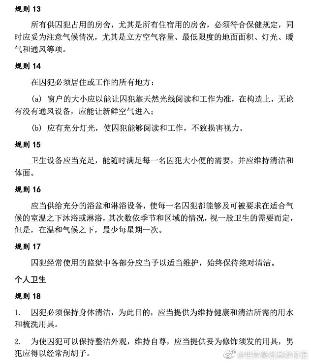
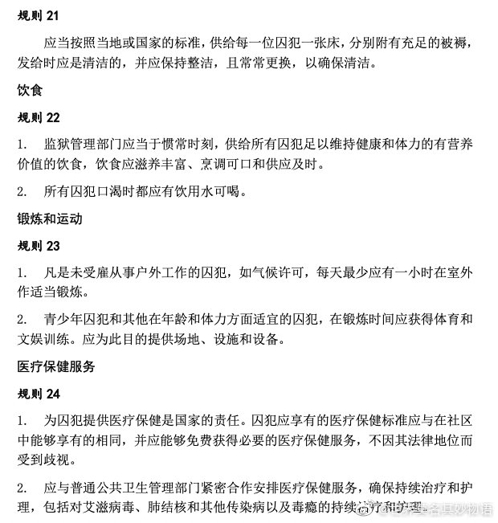

世界莫名其妙无语的主播见师肯定是被关得不行了😂
@世界莫名其妙物语:
1955年，第一届联合国预防犯罪和罪犯待遇大会通过了《囚犯待遇最低限度标准规则》。2015年，联合国大会通过了修订扩展后的规则，又称《纳尔逊•曼德拉规则》（简称《曼德拉规则》），以纪念这位20世纪最负盛名的囚犯。联合国人权事务高级专员办事处（人权高专办）确保修订后的规则反映了自1950年代以来通过的国际人权准则。至此，《曼德拉规则》能够为各国提供详细的指导方针，保护被剥夺自由者的权利，无论是审前被羁押者，还是被判刑的囚犯。
其中的条目有：
规则15：卫生设备应当充足，能随时满足每一名囚犯大小便的需要，并应维持清洁和体面。
规则16：应当供给充分的浴盆和淋浴设备，使每一名囚犯都能够及可被要求在适合气 候的室温之下沐浴或淋浴，其次数依季节和区域的情况，视一般卫生的需要而定， 但是，在温和气候之下，最少每星期一次。
规则22：监狱管理部门应当于惯常时刻，供给所有囚犯足以维持健康和体力的有营养价值的饮食，饮食应滋养丰富、烹调可口和供应及时。
规则 23：凡是未受雇从事户外工作的囚犯，如气候许可，每天最少应有一小时在室外作适当锻炼。
规则 25： 所有监狱都应有医务处，负责评估、促进、保护和改善囚犯的身心健康，特 别关注具有特殊保健需要的囚犯或有阻碍其恢复正常生活的健康问题的囚犯。
规则 28：女犯监狱应特别提供各种必需的产前和产后照顾和治疗。可能时应作出安 排，使婴儿在监狱外的医院出生。
规则 29：允许儿童在监狱与自己父/母同住的决定应当基于相关儿童的最佳利益。
规则 43：限制或纪律惩罚在任何情况下都不可发展成酷刑或其他残忍、不人道或有辱 人格的待遇或处罚。以下做法特别应当禁止:(a) 无限期的单独监禁;(b) 长期单独监禁;(c) 将囚犯关在黑暗或持续明亮的囚室中;(d) 体罚，或减少囚犯饮食和饮水;(e) 集体处罚。就本套规则而言，单独监禁应指一天内对囚犯实行没有有意义人际接触的监禁达到或超过 22 个小时。长期单独监禁应指连续超过15 天的单独监禁。
规则 119：所有未经审讯的囚犯都有权被立即告知其被拘留的原因和针对其提出的任何指控。
其中的条目有：
规则15：卫生设备应当充足，能随时满足每一名囚犯大小便的需要，并应维持清洁和体面。
规则16：应当供给充分的浴盆和淋浴设备，使每一名囚犯都能够及可被要求在适合气 候的室温之下沐浴或淋浴，其次数依季节和区域的情况，视一般卫生的需要而定， 但是，在温和气候之下，最少每星期一次。
规则22：监狱管理部门应当于惯常时刻，供给所有囚犯足以维持健康和体力的有营养价值的饮食，饮食应滋养丰富、烹调可口和供应及时。
规则 23：凡是未受雇从事户外工作的囚犯，如气候许可，每天最少应有一小时在室外作适当锻炼。
规则 25： 所有监狱都应有医务处，负责评估、促进、保护和改善囚犯的身心健康，特 别关注具有特殊保健需要的囚犯或有阻碍其恢复正常生活的健康问题的囚犯。
规则 28：女犯监狱应特别提供各种必需的产前和产后照顾和治疗。可能时应作出安 排，使婴儿在监狱外的医院出生。
规则 29：允许儿童在监狱与自己父/母同住的决定应当基于相关儿童的最佳利益。
规则 43：限制或纪律惩罚在任何情况下都不可发展成酷刑或其他残忍、不人道或有辱 人格的待遇或处罚。以下做法特别应当禁止:(a) 无限期的单独监禁;(b) 长期单独监禁;(c) 将囚犯关在黑暗或持续明亮的囚室中;(d) 体罚，或减少囚犯饮食和饮水;(e) 集体处罚。就本套规则而言，单独监禁应指一天内对囚犯实行没有有意义人际接触的监禁达到或超过 22 个小时。长期单独监禁应指连续超过15 天的单独监禁。
规则 119：所有未经审讯的囚犯都有权被立即告知其被拘留的原因和针对其提出的任何指控。
- 
- 